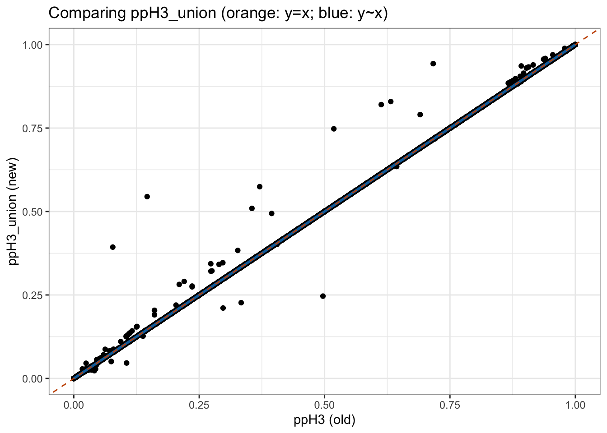
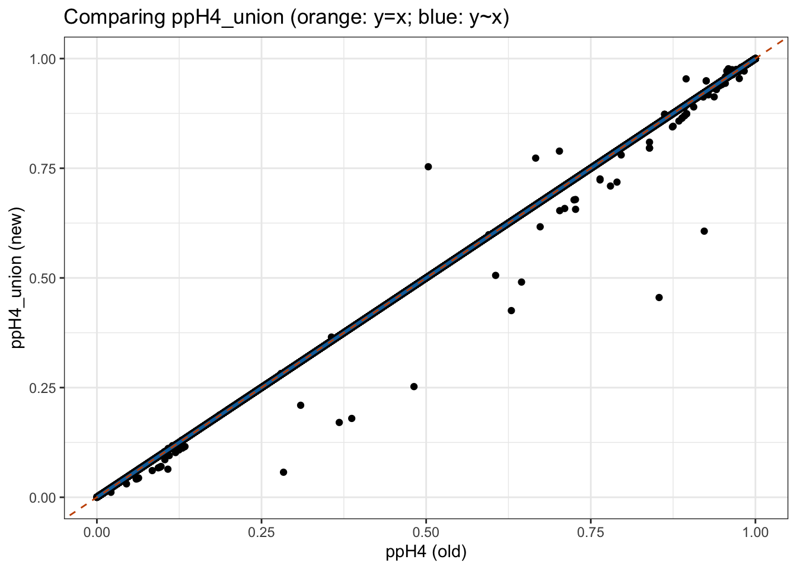
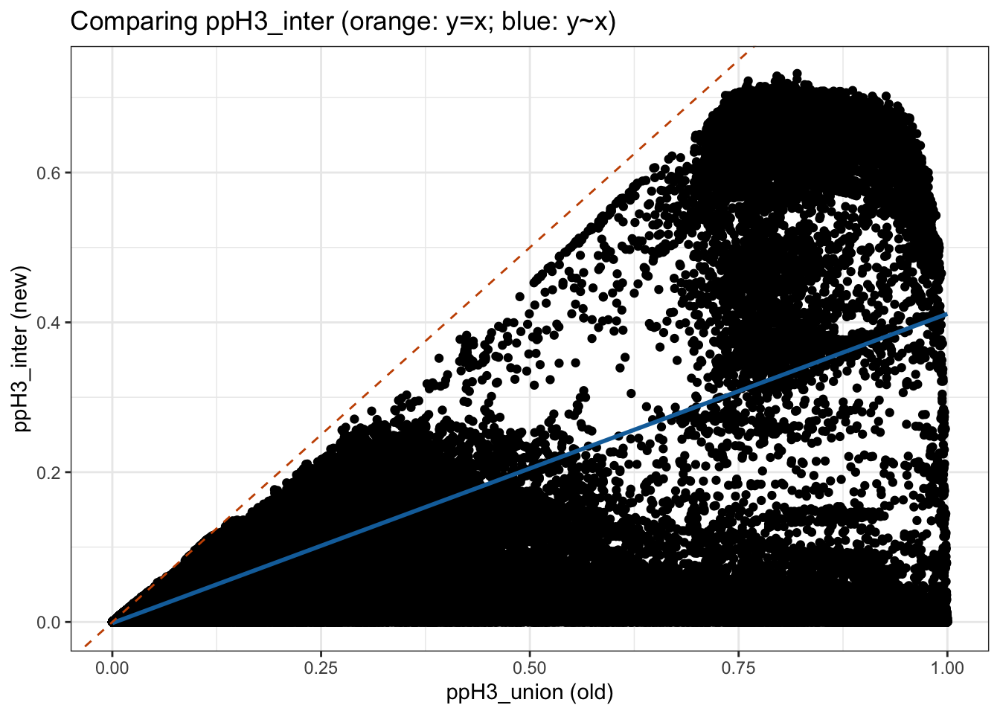
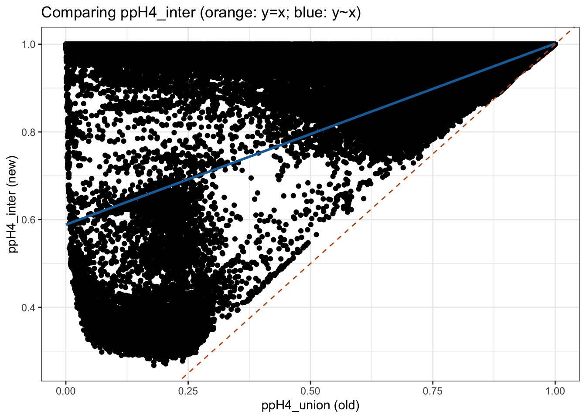

Last updated: 2026-04-28
Checks: 7 0
Knit directory: scratch/
This reproducible R Markdown analysis was created with workflowr (version 1.7.2). The Checks tab describes the reproducibility checks that were applied when the results were created. The Past versions tab lists the development history.
Great! Since the R Markdown file has been committed to the Git repository, you know the exact version of the code that produced these results.
Great job! The global environment was empty. Objects defined in the global environment can affect the analysis in your R Markdown file in unknown ways. For reproduciblity it’s best to always run the code in an empty environment.
The command set.seed(20250402) was run prior to running
the code in the R Markdown file. Setting a seed ensures that any results
that rely on randomness, e.g. subsampling or permutations, are
reproducible.
Great job! Recording the operating system, R version, and package versions is critical for reproducibility.
Nice! There were no cached chunks for this analysis, so you can be confident that you successfully produced the results during this run.
Great job! Using relative paths to the files within your workflowr project makes it easier to run your code on other machines.
Great! You are using Git for version control. Tracking code development and connecting the code version to the results is critical for reproducibility.
The results in this page were generated with repository version 69f946c. See the Past versions tab to see a history of the changes made to the R Markdown and HTML files.
Note that you need to be careful to ensure that all relevant files for
the analysis have been committed to Git prior to generating the results
(you can use wflow_publish or
wflow_git_commit). workflowr only checks the R Markdown
file, but you know if there are other scripts or data files that it
depends on. Below is the status of the Git repository when the results
were generated:
Ignored files:
Ignored: .DS_Store
Ignored: .Rhistory
Ignored: .Rproj.user/
Note that any generated files, e.g. HTML, png, CSS, etc., are not included in this status report because it is ok for generated content to have uncommitted changes.
These are the previous versions of the repository in which changes were
made to the R Markdown
(analysis/compare_coloc_pip_otcs.Rmd) and HTML
(docs/compare_coloc_pip_otcs.html) files. If you’ve
configured a remote Git repository (see ?wflow_git_remote),
click on the hyperlinks in the table below to view the files as they
were in that past version.
| File | Version | Author | Date | Message |
|---|---|---|---|---|
| Rmd | 69f946c | Xiang Zhu | 2026-04-28 | wflow_publish("analysis/compare_coloc_pip_otcs.Rmd") |
suppressPackageStartupMessages({
library(ggplot2)
library(data.table)
library(xzTools)
})
dat_path <- "/Users/xiangzhu/Documents/1-Projects/brain2gene/coloc/single_20241220_eur"old_files <- list.files(
path = file.path(dat_path,"opentargets2512_20260102"),
pattern = "\\.rds$",
full.names = TRUE
)
new_files <- list.files(
path = file.path(dat_path,"opentargets2603_20260426"),
pattern = "\\.rds$",
full.names = TRUE
)
old_data <- lapply(old_files, readRDS)
new_data <- lapply(new_files, readRDS)
old_dt <- data.table::rbindlist(
lapply(old_data, `[[`, "coloc_dt"),
fill = TRUE
)
new_dt <- data.table::rbindlist(
lapply(new_data, `[[`, "coloc_dt"),
fill = TRUE
)
rm(old_data, new_data, old_files, new_files,dat_path)
table(old_dt$studyLocusId %in% new_dt$studyLocusId,useNA="always")
FALSE TRUE <NA>
76 126934 0
FALSE TRUE <NA>
713 126939 0
TRUE <NA>
127010 0
TRUE <NA>
127652 0 cmp_dt <- merge(old_dt[, .(studyLocusId, pheHitId, ppH3, ppH4)],new_dt[, .(studyLocusId, pheHitId, ppH3_inter, ppH4_inter, ppH3_union, ppH4_union)],by = c("studyLocusId", "pheHitId"),all = FALSE)
identical(cmp_dt$ppH3, cmp_dt$ppH3_union)[1] FALSE[1] FALSE[1] "Mean relative difference: 0.0002384669"[1] "Mean relative difference: 0.0004016137" Min. 1st Qu. Median Mean 3rd Qu. Max.
-3.984e-01 0.000e+00 0.000e+00 -2.246e-05 0.000e+00 2.502e-01 Min. 1st Qu. Median Mean 3rd Qu. Max.
-2.502e-01 0.000e+00 0.000e+00 2.246e-05 0.000e+00 3.984e-01 [1] 71722 71722[1] 65112 65112Key: <studyLocusId, pheHitId>
studyLocusId pheHitId
<char> <char>
1: 90613afc2c90e1a89d0723016bd40a4f sn_l_vol_nln_chr12_123292021_susie_L1
ppH3 ppH4 ppH3_inter ppH4_inter ppH3_union ppH4_union
<num> <num> <num> <num> <num> <num>
1: 0.496745 0.503255 0.1500427 0.8499573 0.246531 0.753469new_dt[studyLocusId=="90613afc2c90e1a89d0723016bd40a4f" & pheHitId=="sn_l_vol_nln_chr12_123292021_susie_L1"] studyLocusId pheHitId
<char> <char>
1: 90613afc2c90e1a89d0723016bd40a4f sn_l_vol_nln_chr12_123292021_susie_L1
numUkbwgsVar numOpentargetsVar numSharedVar ppH3_union ppH4_union ppH3_inter
<int> <int> <int> <num> <num> <num>
1: 219 159 136 0.246531 0.753469 0.1500427
ppH4_inter studyId studyType region
<num> <char> <char> <char>
1: 0.8499573 GCST90624701 gwas chr12:123423016-123423016
finemappingMethod
<char>
1: PICS
confidence sampleSize
<char> <int>
1: PICS fine-mapped credible set extracted from summary statistics NA
credibleSetlog10BF purityMeanR2 purityMinR2
<num> <num> <num>
1: NA NA NAold_dt[studyLocusId=="90613afc2c90e1a89d0723016bd40a4f" & pheHitId=="sn_l_vol_nln_chr12_123292021_susie_L1"] studyLocusId pheHitId
<char> <char>
1: 90613afc2c90e1a89d0723016bd40a4f sn_l_vol_nln_chr12_123292021_susie_L1
numUkbwgsVar numOpentargetsVar numSharedVar ppH3 ppH4 studyId
<int> <int> <int> <num> <num> <char>
1: 219 1 1 0.496745 0.503255 GCST90624701
studyType region finemappingMethod
<char> <char> <char>
1: gwas chr12:123423016-123423016 PICS
confidence sampleSize
<char> <int>
1: PICS fine-mapped credible set extracted from summary statistics NA
credibleSetlog10BF purityMeanR2 purityMinR2
<num> <num> <num>
1: NA NA NAKey: <studyLocusId, pheHitId>
studyLocusId pheHitId ppH3
<char> <char> <num>
1: 8373eb1b582c0abe146549626172bbb0 lc_vol_nln_chr7_2768961_susie_L1 0.1462081
ppH4 ppH3_inter ppH4_inter ppH3_union ppH4_union
<num> <num> <num> <num> <num>
1: 0.8537919 0.0202618 0.9797382 0.5446521 0.4553479new_dt[studyLocusId=="8373eb1b582c0abe146549626172bbb0" & pheHitId=="lc_vol_nln_chr7_2768961_susie_L1"] studyLocusId pheHitId
<char> <char>
1: 8373eb1b582c0abe146549626172bbb0 lc_vol_nln_chr7_2768961_susie_L1
numUkbwgsVar numOpentargetsVar numSharedVar ppH3_union ppH4_union ppH3_inter
<int> <int> <int> <num> <num> <num>
1: 95 106 30 0.5446521 0.4553479 0.0202618
ppH4_inter studyId studyType region finemappingMethod
<num> <char> <char> <char> <char>
1: 0.9797382 GCST90624702 gwas chr7:2756248-2756248 PICS
confidence sampleSize
<char> <int>
1: PICS fine-mapped credible set extracted from summary statistics NA
credibleSetlog10BF purityMeanR2 purityMinR2
<num> <num> <num>
1: NA NA NAold_dt[studyLocusId=="8373eb1b582c0abe146549626172bbb0" & pheHitId=="lc_vol_nln_chr7_2768961_susie_L1"] studyLocusId pheHitId
<char> <char>
1: 8373eb1b582c0abe146549626172bbb0 lc_vol_nln_chr7_2768961_susie_L1
numUkbwgsVar numOpentargetsVar numSharedVar ppH3 ppH4 studyId
<int> <int> <int> <num> <num> <char>
1: 95 1 1 0.1462081 0.8537919 GCST90624702
studyType region finemappingMethod
<char> <char> <char>
1: gwas chr7:2756248-2756248 PICS
confidence sampleSize
<char> <int>
1: PICS fine-mapped credible set extracted from summary statistics NA
credibleSetlog10BF purityMeanR2 purityMinR2
<num> <num> <num>
1: NA NA NAres <- xzTools::compare_2dts(
new_dt = cmp_dt,
old_dt = cmp_dt,
cols_to_compare = c("ppH3_union" = "ppH3", "ppH4_union" = "ppH4"),
cols_to_match = NULL,
get_exact_match = FALSE,
get_correlation = TRUE,
get_regression = TRUE,
get_scatterplot = TRUE
)Pearson correlation between ppH3_union in new and ppH3 in old:
Estimate = 0.99997692, 95% CI = [0.99997667, 0.99997717]
Regression coefficients for ppH3_union (new ~ old):
Estimate Std. Error t value Pr(>|t|)
(Intercept) 1.481782e-05 8.628808e-06 1.71725 0.08593591
x 1.000025e+00 1.907011e-05 52439.41976 0.00000000
Pearson correlation between ppH4_union in new and ppH4 in old:
Estimate = 0.99997692, 95% CI = [0.99997667, 0.99997717]
Regression coefficients for ppH4_union (new ~ old):
Estimate Std. Error t value Pr(>|t|)
(Intercept) -4.024902e-05 1.481773e-05 -2.716273 0.006603031
x 1.000025e+00 1.907011e-05 52439.419759 0.000000000$ppH3_union_vs_ppH3
$ppH4_union_vs_ppH4
Min. 1st Qu. Median Mean 3rd Qu. Max.
-0.999976 -0.208355 -0.063333 -0.178477 -0.004926 0.000000 Min. 1st Qu. Median Mean 3rd Qu. Max.
0.000000 0.004926 0.063333 0.178477 0.208355 0.999976 res <- xzTools::compare_2dts(
new_dt = new_dt,
old_dt = new_dt,
cols_to_compare = c("ppH3_inter" = "ppH3_union", "ppH4_inter" = "ppH4_union"),
cols_to_match = NULL,
get_exact_match = FALSE,
get_correlation = TRUE,
get_regression = TRUE,
get_scatterplot = TRUE
)Pearson correlation between ppH3_inter in new and ppH3_union in old:
Estimate = 0.62679220, 95% CI = [0.62345014, 0.63011135]
Regression coefficients for ppH3_inter (new ~ old):
Estimate Std. Error t value Pr(>|t|)
(Intercept) -0.001448413 0.0006513603 -2.223673 0.02617217
x 0.412797229 0.0014362968 287.403857 0.00000000
Pearson correlation between ppH4_inter in new and ppH4_union in old:
Estimate = 0.62679220, 95% CI = [0.62345014, 0.63011135]
Regression coefficients for ppH4_inter (new ~ old):
Estimate Std. Error t value Pr(>|t|)
(Intercept) 0.5886512 0.001115058 527.9110 0
x 0.4127972 0.001436297 287.4039 0$ppH3_inter_vs_ppH3_union
$ppH4_inter_vs_ppH4_union
R version 4.5.2 (2025-10-31)
Platform: aarch64-apple-darwin20
Running under: macOS Tahoe 26.4.1
Matrix products: default
BLAS: /System/Library/Frameworks/Accelerate.framework/Versions/A/Frameworks/vecLib.framework/Versions/A/libBLAS.dylib
LAPACK: /Library/Frameworks/R.framework/Versions/4.5-arm64/Resources/lib/libRlapack.dylib; LAPACK version 3.12.1
locale:
[1] en_US.UTF-8/en_US.UTF-8/en_US.UTF-8/C/en_US.UTF-8/en_US.UTF-8
time zone: America/Los_Angeles
tzcode source: internal
attached base packages:
[1] stats graphics grDevices utils datasets methods base
other attached packages:
[1] xzTools_0.0.0.9000 data.table_1.18.2.1 ggplot2_4.0.3
[4] workflowr_1.7.2
loaded via a namespace (and not attached):
[1] sass_0.4.10 generics_0.1.4 stringi_1.8.7 lattice_0.22-9
[5] digest_0.6.39 magrittr_2.0.5 evaluate_1.0.5 grid_4.5.2
[9] RColorBrewer_1.1-3 fastmap_1.2.0 Matrix_1.7-5 rprojroot_2.1.1
[13] jsonlite_2.0.0 processx_3.9.0 whisker_0.4.1 promises_1.5.0
[17] httr_1.4.8 mgcv_1.9-4 scales_1.4.0 jquerylib_0.1.4
[21] cli_3.6.6 rlang_1.2.0 splines_4.5.2 withr_3.0.2
[25] cachem_1.1.0 yaml_2.3.12 otel_0.2.0 tools_4.5.2
[29] dplyr_1.2.1 httpuv_1.6.17 vctrs_0.7.3 R6_2.6.1
[33] lifecycle_1.0.5 git2r_0.36.2 stringr_1.6.0 fs_2.1.0
[37] pkgconfig_2.0.3 callr_3.7.6 pillar_1.11.1 bslib_0.10.0
[41] later_1.4.8 gtable_0.3.6 glue_1.8.1 Rcpp_1.1.1
[45] xfun_0.57 tibble_3.3.1 tidyselect_1.2.1 rstudioapi_0.18.0
[49] knitr_1.51 dichromat_2.0-0.1 farver_2.1.2 htmltools_0.5.9
[53] nlme_3.1-169 labeling_0.4.3 rmarkdown_2.31 compiler_4.5.2
[57] getPass_0.2-4 S7_0.2.2